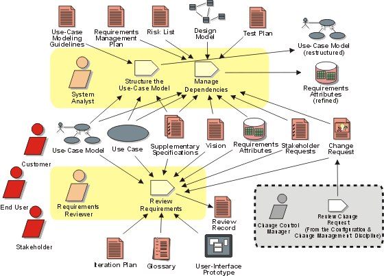

Disciplines >
Disciplines >
 Requirements >
Requirements >
 Workflow >
Manage Changing Requirements
Workflow >
Manage Changing Requirements
Disciplines >
Requirements >
Workflow >
Manage Changing Requirements
Workflow Detail:
|
Topics |
 |
The purpose of this workflow detail is to:
Changes to requirements naturally impact the models produced in the Analysis & Design discipline, the test plan created in the Test discipline and the end-user support materials from the Deployment discipline. The Traceability relationships identified in the manage dependency activity of this discipline, identify the relationships between requirements and other artifacts. These relationships are the key to understanding the impact of requirements change.
Another important concept is the tracking of requirement history. By capturing the nature and rationale of requirements changes, reviewers (in this case the role is played by anyone on the software project team whose work is affected by the change) receive the information needed to respond to the change properly.
Regular reviews, along with updates to the attributes and dependencies, should be done as shown in this workflow detail whenever the requirements specifications are updated.
Involve the extended team (stakeholders, customer representatives, domain experts, and others). Be careful to manage your reviewing resources effectively—do not include the entire extended team unless you can ensure it adds value to the project.
The extended team should cover good knowledge of the problem domain, the technical difficulties of the project, as well as skills in requirements management and use-case modeling.
The core development team should conduct a few rounds of internal walkthroughs to clean up unnecessary inconsistencies before their work is more formally inspected and reviewed by the extended team.
You should divide the material up so that the team does not review everything at once. A review meeting shouldn't take more than a day (for example, conduct separate reviews of the user interface).
|
Rational Unified
Process
|